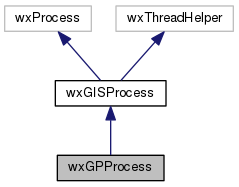
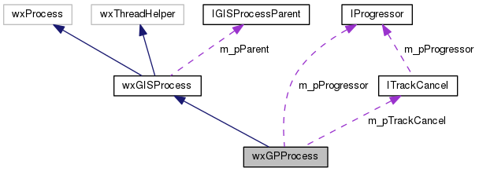

|
|
Version: 0.5.0 |


wxGPProcess Class Reference
A Geoprocess class. More...
#include <gptoolmngr.h>
Inheritance diagram for wxGPProcess:

Collaboration diagram for wxGPProcess:

Public Member Functions | |
| wxGPProcess (wxString sCommand, wxArrayString saParams, IProcessParent *pParent, ITrackCancel *pTrackCancel) | |
| Class wxGPProcess. | |
| virtual void | ProcessInput (wxString sInputData) |
 Public Member Functions inherited from wxGISProcess Public Member Functions inherited from wxGISProcess | |
| wxGISProcess (IGISProcessParent *pParent=NULL) | |
| virtual void | OnTerminate (int pid, int status) |
| virtual bool | Start (void) |
| virtual void | Stop (void) |
| virtual void | ProcessInput (wxString &sInputData) |
| virtual void | SetState (wxGISEnumTaskStateType nState) |
| virtual wxGISEnumTaskStateType | GetState (void) const |
| virtual wxDateTime | GetStart (void) const |
| virtual wxDateTime | GetFinish (void) const |
Protected Attributes | |
| ITrackCancel * | m_pTrackCancel |
| IProgressor * | m_pProgressor |
| Protected Attributes inherited from wxGISProcess | |
| IGISProcessParent * | m_pParent |
| wxCriticalSection | m_ExitLock |
| wxDateTime | m_dtBeg |
| wxDateTime | m_dtEstEnd |
| wxGISEnumTaskStateType | m_nState |
| double | m_dfDone |
Additional Inherited Members | |
| Protected Member Functions inherited from wxGISProcess | |
| virtual wxThread::ExitCode | Entry () |
| bool | CreateAndRunReadThread (void) |
| void | DestroyReadThread (void) |
| virtual long | Execute (void)=0 |
| virtual void | UpdatePercent (const wxString &sPercentData) |
| virtual void | AddInfo (wxGISEnumMessageType nType, const wxString &sInfoData)=0 |
Detailed Description
A Geoprocess class.
The documentation for this class was generated from the following files:
- D:/work/projects/wxGIS/include/wxgis/geoprocessing/gptoolmngr.h
- D:/work/projects/wxGIS/src/geoprocessing/gptoolmngr.cpp
- Generated on Mon Oct 28 2013 04:48:02 for wxGIS by
 1.8.5
1.8.5